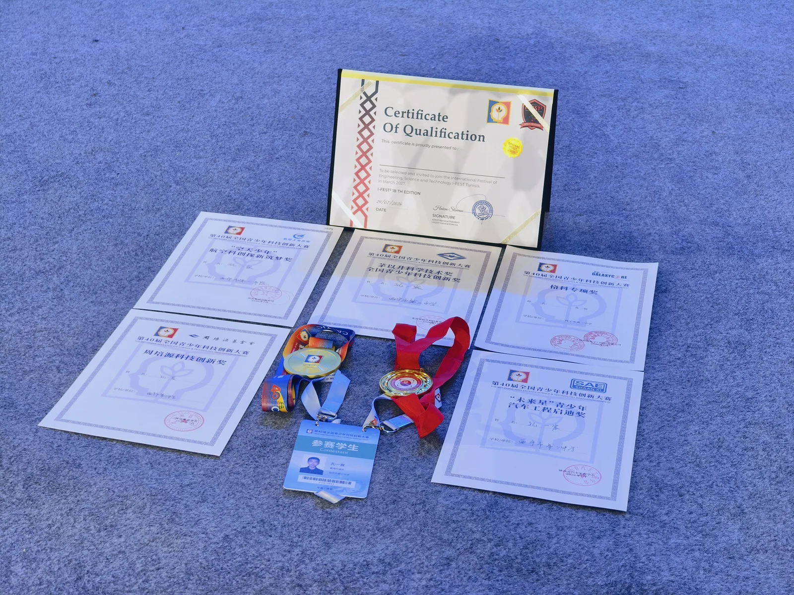

国家发明专利申请National invention patent application
唯一发明人。申请号 202610625965.2；根据本人提供的简历，已通过初步审查并进入实质审查阶段。Sole inventor. Application 202610625965.2; the supplied CV records completion of preliminary examination and entry into substantive examination.

成果与荣誉 · 2025Recognition · 2025
竞赛、专利申请与测试记录。Competitions, patent application and testing records.
2025 年。奖项名称以证书和原始简历为准。2025. Award names follow the certificates and supplied CV.
唯一发明人。申请号 202610625965.2；根据本人提供的简历，已通过初步审查并进入实质审查阶段。Sole inventor. Application 202610625965.2; the supplied CV records completion of preliminary examination and entry into substantive examination.
连续两年入围全国青少年科技创新大赛，连续两年获青海省青少年科技创新大赛一等奖。A national finalist and Qinghai first-prize recipient in the youth science and technology innovation competition for two consecutive years.
自主设计的无线电收发设备通过青海省无线电检测站 CMA 检测。The self-designed radio transceivers passed CMA testing by the Qinghai Radio Testing Station.
自主设计的探空业务计算终端通过实际验证测试。The self-designed sounding calculator underwent operational validation tests.